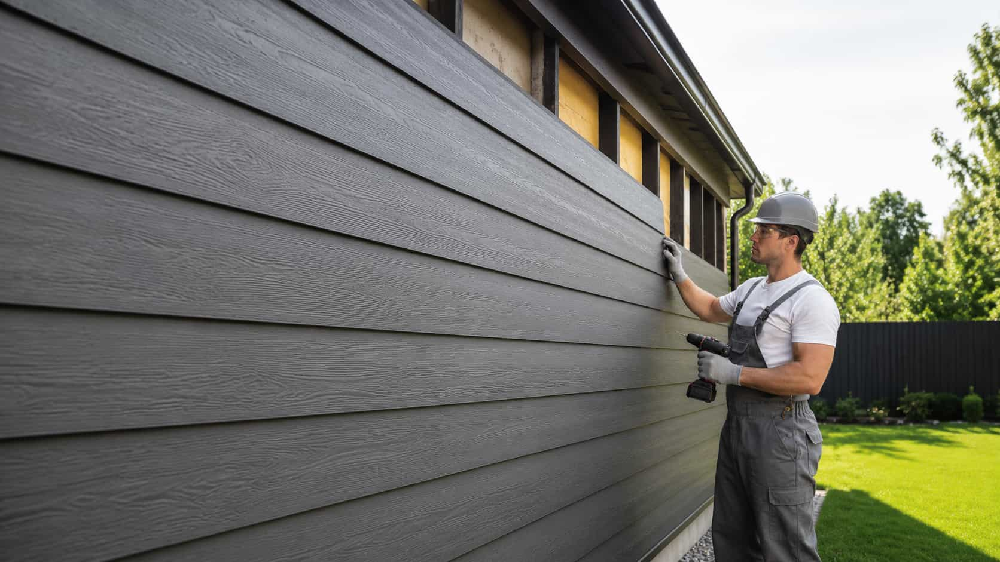
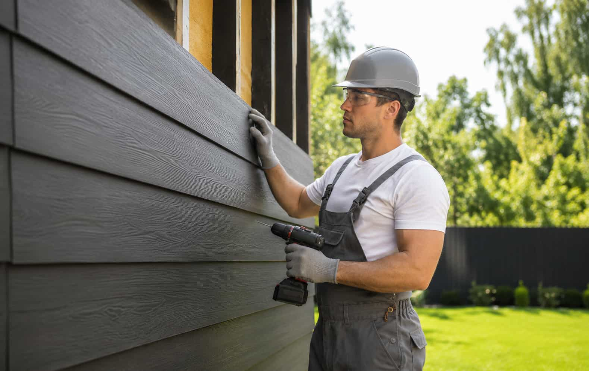

Compare Siding Replacement Providers
Paneli helps homeowners compare independent siding provider options for replacement projects.
Compare providers for replacing old siding.
Siding replacement can involve removing existing exterior cladding, reviewing the surface condition, choosing new materials, and comparing project scope.
Important platform note
Paneli is an independent provider-matching platform. It does not remove, replace, install, inspect, repair, or maintain siding directly.

Replacement estimates should explain more than new panels.
Siding replacement can include removal, disposal, surface preparation, hidden damage notes, new material selection, trim details, and warranty terms.
Replacement comparison depends on what is being removed and what comes next.
Homeowners should ask how each provider describes removal scope, disposal, prep work, material upgrades, possible repairs, and timeline expectations.
Start ComparisonAsk how removal, disposal, and replacement scope are listed.
Replacement estimates should make it easier to compare what is included before old siding is removed and new exterior cladding is installed by an independent provider.
Hidden damage, preparation needs, disposal, pricing, timelines, and warranty terms should be discussed directly with each independent provider.
Ask replacement-specific questions before choosing.
Use these questions when comparing independent siding providers for removing old siding and reviewing replacement exterior cladding options.
Siding replacement comparison questions.
These answers keep the platform role clear and remind homeowners to verify provider details directly.
Ready to compare siding replacement provider options?
Start with your replacement goal and review independent provider options directly.